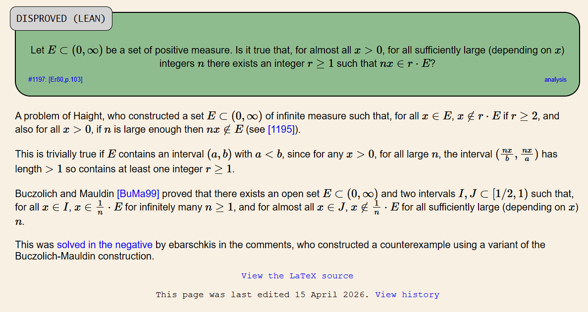

Erdős Problem #1197

1.) The Beginning?
So you start out with a measurable set \(E\) inside \((0,\infty)\) that has positive measure (measure just means the interval's length). Now the measure extends that idea to sets with gaps (the gaps can be arbitrarily widely scattered). For any measurable set \(E\) of positive real numbers with positive measure, let us consider the sets \(rE=\{re:e\in E\}\), where \(r\) ranges over all positive integers. J.A. Haight then conjectured whether every sufficiently late multiple of any positive real number \(x\) must belong to some \(rE\), for almost every choice of \(x\). Erdős later mentioned this problem in his 1980 paper "A SURVEY OF PROBLEMS IN COMBINATORIAL NUMBER THEORY".
In other words, is there a positive integer \(N(x)\) for almost every positive real \(x\), such that every positive integer \(n\ge N(x)\) has some positive integer \(r\) with \(nx\in rE\)? The threshold can be different for \(x\) and the condition of "almost every" allows a set of exceptional \(x\) of measure zero but we cannot exclude an interval of positive length.
2.) Many Things That Once Were
If \(E\) contains an interval \((a,b)\), where \(0<a<b\), we can find a positive integer \(r\) strictly between \(nx/b\) and \(nx/a\). The width of this interval grows with \(n\), and once it is larger than \(1\), it is guaranteed to contain an integer \(r\) and since \(a<nx/r<b\), we can deduce that \(nx/r\) is in \(E\).
Now this specific argument applies for all fixed positive \(x\) and all sufficiently large integers \(n\). Problem is however, that the positive measure alone won't guarantee us that this works for any interval. A set can retain positive length after having holes removed from every neighborhood. Now Haight had already constructed a set of infinite measure for which every \(x>0\) has only finitely many multiples \(nx\) in the set. His set also contains no pair of distinct points whose ratio is an integer (this is discussed more in detail in Erdős Problem #\(1195\)), however the annoying thing that we have to miss EVERY stretched copy \(rE\), not just \(E\), and it get even worse, we have to miss it all at the same time.
Skip 21 years into the future and we have Buczolich and Mauldin who provide us with a way to build an open set that the integer multiples of almost every point in another interval visit finitely often. Now, as cool as this might sound, it still isn't enough to be a counterexample since it contains an interval. Instead, we need a lemma behind their construction, which builds sets that catch multiples from one interval while barely affecting another.
3.) There and Back Again
So when I got around to this problem, I was intrigued at first, since it just came out in the new batch of problems that Thomas Bloom (the admin and maintainer) added to the site. I just entered school holidays so, I thought to myself another Erdős Problem won't hurt.
At that point OpenAI's new models which they provided me were an enormous step up than what they were like at the start of the year. Not only could the models now come up with rigorous theorems and proofs, but they could also autonomously explore various proof ideas. Before, you had to get the models to manually explore a very specific avenue using specific ideas in a very specific way. You had to be extremely delicate with the instructions, since if you didn't explain precisely what you wanted, it would probably spit out nonsense.
But with the new model, you could just ask it to explore a very rough idea or concept, and it will go out and reason for multiple hours and give you a very concrete answer on what worked, what didn't and even suggest new ideas. So point being, you were no longer forced to babysit the model towards what you wanted, but now it could actively explore an idea for you.
Sorry if I am going off on a tangent, but I think the whole "experience" of mathematics has changed drastically from having to go down each proof route manually and having to do all the calculations one by one yourself, to sending out a swarm of agents to do it for you. In other words, the work itself has radically transitioned from that of manual grunt work to more high-level agent management, which in my opinion is a very welcome change.
Anyways, I had a newly provided OpenAI model try various ideas of mine, until one worked, specifically it reused the Buczolich-Mauldin lemma, which took a complement of the points affected by their sets. I then reran the argument multiple times through the models, since proofchecking was another thing these models incredibly improved at.
I then fed the counterexample into the new Aristotle models, which then formally verified it (although with an assumption). I then uploaded the solutions to the forum and noted the remaining Lean gap which was an implementation of the prime number theorem. Luckily, Tom de Groot, who had been extensively working on a Lean implementation of the PNT, was there to help and after two days managed to complete the Lean proof.
4.) The pieces are moving
The main difficulty lies in the fact that we have freedom to choose \(r\). Finding a large \(n\) with \(nx\) not belonging to \(E\) barely matters if \(nx\) might still belong to \(2E\), \(E\), \(4E\), etc. Hence, we need a no-go set \(F\) that all the copies \(rE\) avoid, but that the multiples of every \(x\) in some interval keep hitting.
Intuitively, this suggests that we should build \(F\) first and then remove every point whose multiples can reach \(F\) from a starting interval. After removing those points, the remaining set will be our \(E\), however the problem then becomes that we need to keep enough of that interval to ensure the measure is positive. To solve this, we can make Buczolich and Mauldin's work do the heavy lifting for us.
Take \[I=\left(\frac89,1\right), \qquad J=\left[\frac{16}{25},\frac23\right].\]
\(E\) is contained in \(I\). The counterexample fails at every point in \(J\). To explain in more detail what we are actually removing, take \[\Phi(H)=\left[\frac12,1\right)\cap\bigcup_{m=1}^{\infty}\frac1m H.\] A point belongs to \(\Phi(H)\) only when it lies in \(\left[\frac12,1\right)\) and some multiple of it lands in \(H\). So what we are going to do now is shrink H by every integer and collect the points those copies cover in our reference interval.
The Lemma before Theorem 1 in Buczolich-Mauldin gives us open sets \(H_k\) in disjoint ranges \((2^{\nu_k-1},2^{\nu_k})\) with the integers \(\nu_k\) increasing, furthermore satisfying \[J\subset\Phi(H_k),\qquad |I\cap\Phi(H_k)|<5\cdot2^{-k}.\]
So by that first property, every point in \(J\) has a integer multiple in every \(H_k\) and by the second property, the measure of the integer-dilation preimage \(\Phi(H_k)\) inside \(I\) is less than \(5\cdot2^{-k}\), so neatly providing us with a decreasing upper bound on the part of \(I\) that has to be removed.
However this bound only considers the integer-dilation preimage inside \(I\), so a small measure of \(H_k\) won't be enough to control the union of its shrunken copies in \(I\).
By working in logarithmic coordinates, where multiplying by an integer becomes adding its logarithm, Buczolich and Mauldin were able to use Kronecker's approximation theorem to arrange many shifts at once. Roughly, selected primes give shifts spread around a fine periodic grid. For any point in \(J\), one of those shifts moves it into a narrow target interval. The integers that could take a point of \(I\) into the same shell are arranged to have shifts close to zero modulo that grid. Their integer-dilation preimages therefore overlap in narrow regions, instead of spreading across \(I\).
The prime number theorem supplies the needed primes in the required range. The primes are larger than the competing integers, so unique prime factorization gives the compatibility condition needed for Kronecker's theorem. The exact ranges and error bounds are from the original proof. That's how one set can catch a multiple of every point in \(J\) while casting such a small integer-dilation preimage in \(I\).
Let \(K\) be a sufficiently large integer so that the BM lemma applies and \[\sum_{k=K}^{\infty}5\cdot2^{-k}<\frac19=|I|.\] Define \(F=\bigcup_{k=K}^{\infty}H_k\), and let \(E=I\setminus\Phi(F)\).
Remove every point in \(I\) that can send an integer multiple into any of the shells. The total amount deleted is at most the sum of the individual shadow measures, so \[|E|\geq\frac19-\sum_{k=K}^{\infty}5\cdot2^{-k}>0.\] \(\text{E}\) has positive measure. All the sets in the construction are measurable, since the shells are open and the shadows are countable unions of scaled open sets, restricted to an interval.
Now suppose \(y\in F\) could also be written as \(y=re\), where \(e\in E\) and \(r\geq1\) is an integer. Then an integer multiple of \(e\) reaches \(F\), so \(e\in\Phi(F)\). But those are precisely the points we removed from \(I\). Therefore \[F\cap rE=\varnothing\qquad\text{for every integer }r\geq1,\] so we don't have to go after the stretched copies individually.
Let \(x \in J\) be given. For every \(k\), the lemma gives us an integer \(n_k\) such that \(n_kx \in H_k\). By the disjointness of the shells, these integers are distinct, so the same multiple cannot sit in two disjoint sets. Thus, there are infinitely many such \(n_k\) and they are unbounded.
Each \(n_kx\) lies in \(F\), which misses every \(rE\). So as a consequence, for every \(x\in J\), there is a infinite amount of \(n\) such that \(nx\notin rE\) for every integer \(r\geq 1\). And now that we have demonstrated that infinitely many such integers exist for every \(x\in J\), the desired covering property fails throughout \(J\), giving us a negative answer to the conjecture.
5.) And Whither Then?
I have now clearly demonstrated a negative answer to Haight's 1980 problem by showing that the set \(E\) has positive measure, but every \(x\) in the interval \([16/25,2/3]\) has infinitely many multiples outside every integer dilation of \(E\). I just simply repurposed the Buczolich–Mauldin shells through the construction \(E=I\setminus\Phi(F)\) and developed a counterexample with the help of a advanced OpenAI model and an initial formalization assisted by Harmonic's "Aristotle" autoformalization models. I would also like to thank Tom de Groot for supplying the subsequent work resolving the original formalization gap and his work on the PNT+ project.
My paper: A negative answer to an eventual covering question for rational dilates
Lean formalization and Tom de Groot's completion
Problem statement and forum discussion
Buczolich and Mauldin: On the convergence of \(\sum_{n=1}^{\infty}f(nx)\) for measurable functions